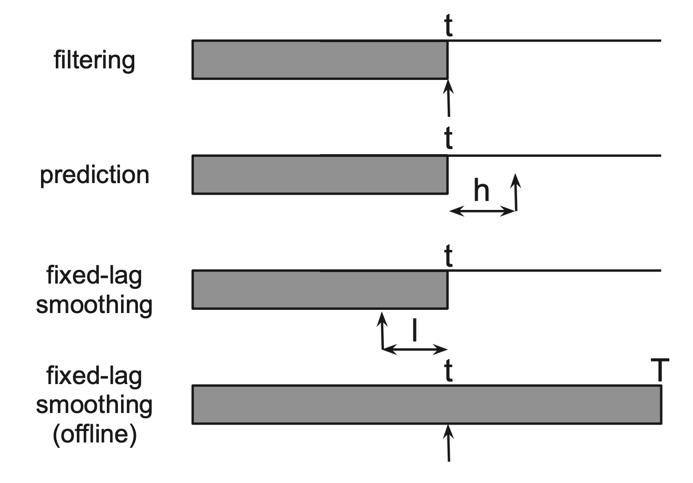

Hidden Markov Models (HMMs)
The graphical model
Sequential data: datasets in which successive samples are no longer assumed to be independent.
Markov models
For discrete time steps:
p(x)=p(x1)t=2∏Tp(xt∣xt−1)
If the transition probability p(xt∣xt−1) is independent of time, then the chain is called homogenous, stationary, or time-invariant.
If xt is discrete, we can represent p(xt∣xt−1) as a transition matrix A, where Aij=p(Xt=j∣Xt−1=i). Each row of the matrix sums to one, ∑jAij=1, so this is called a stochastic matrix.
HMM
An HMM is a natural generalization of a mixture model, viewed as a "dynamical" mixture model, where we no longer assume that the states (i.e. mixture components) are chosen independently at each step, but that the choice of a state at a given step depends on the choice of the state at the previous step. Thus we augment the basic mixture model to include a matrix of transition probabilites linking the states at neighbouring steps.
A HMM consists of a discrete-time, discrete-state Markov chain, plus an observation model aka emission probability p(xt∣zt). The joint distribution:
p(z1:T,x1:T∣θ)=p(z1:T∣θ)p(x1:T∣z,θ)=p(z1∣π)t=2∏Tp(zt∣zt−1,A)t=1∏Tp(xt∣zt,ϕ)
where
- Parameters θ={π,A,ϕ}
- Initial state distribution p(z1=i)=πi
- Transition matrix Ai,j=p(zt=j∣zt−1=i)
- Class-conditional or emission densities p(xt∣zt=k,ϕ). E.g.
- Discrete: p(xt=l∣zt=k,ϕ)=Bk,l where Bis an observation matrix.
- Continuous: p(xt∣zt=k,ϕ)=N(xt∣μk,Σk)
Inference in HMMs
Types of inference problems for temporal models
Filtering: computes the belief state p(zt∣x1:t) online as the data streams in.
Smoothing: computes p(zt∣x1:t) offline, given all the evidence.
Fixed-lag smoothing: computes p(zt−ℓ∣x1:t) where ℓ>0 is the lag. This is a compromise between online and offline estimation and gives better performance than filtering, but incurs a slight delay. By changing the size of the lag, one can trade off accuracy vs delay.
Prediction: computes p(zt+h∣x1:t) where h>0 is the prediction horizon.
MAP estimation: computes argmaxz1:Tp(z1:T∣x1:T). This is known as Viterbi decoding in the context of HMMs.
Posterior samples: z1:T∼p(z1:T∣x1:T). This can be done when there is more than one plausiable interpretation of the data.
Probability of the eivdence: p(x1:T)=∑z1:Tp(z1:T,x1:T)

The forwards algo (online)
Goal: compute filtered marginal αt=p(zt∣x1:t) aka filtered belief state at time t.
Prediction step: computes the one-step-ahead predictive density; this acts as the new prior for time t.
p(zt=j∣x1:t−1)=i∑p(zt=j∣zt−1=i)p(zt−1=i∣x1:t−1)
Update step: absorved the observed data from time t using Bayes rule
αt(j)≜p(zt=j∣x1:t)=Zt1p(xt∣zt=j)p(zt=j∣x1:t−1)=Zt1ψt(j)i∑αt−1(j)ψ(i,j)
where Zt≜p(xt∣x1:t−1)=∑jψt(j)∑iαt−1(j)ψ(i,j)
In matrix vector notation:
αt∝ψt⊙(ΨTαt−1)
where ψt(j)=p(xt∣zt=j) is the local evidence at time t, Ψ(i,j)=p(pt=j∣zt−1=i) is the transition matrix.
Base case:
α1(j)=p(z1=j∣x1)=ψ1(j)
The forward-backward algo (offline)
Goal: compute the smoothed posterior marginal γt(j)≜p(zt=j∣x1:T).
γt(j)=p(zt=j∣x1:T)∝p(zt=j,xt+1:T∣x1:t)∝p(zt=j∣x1:t)p(xt+1:T∣zt=j)=αt(j)βt(j)
where βj(j)≜p(xt+1:T∣zt=j) is the conditional likelhiood of future evidence given the hidden state at time t is j.
The forwards algo recursively computes the α's in a left-to-right fashion. We'll recursively compute the β's in a right-to-left fashion.
βt−1(i)=p(xt:T∣zt−1=i)=j∑p(zt=j,xt:T∣zt−1=i)=j∑p(xt+1:T∣zt=j)p(xt∣zt=j)p(zt=j∣zt−1=i)=j∑βt(j)ψt(j)ψ(i,j)
We can write the resulting equation in matrix-vector form as
βt−1=Ψ(ψt⊙βt)
The base case is
βT(i)=p(xT+1:T∣zT=i)=p(∅∣zT=i)=1
Two-slice smoothed marginals
When we use EM for learning, we'll need to compute the expected number of transitions from state i to state j:
Nij=t=1∑T−1E[I(zt=i,zt+1=j)∣x1:T]=t=1∑Tp(zt=i,zt+1=j∣x1:T)
Define the (smoothed) two-slice marginal
ξt,t+1(i,j)≜p(zt=i,zt+1=j∣x1:T)∝p(zt∣x1:t)p(zt+1∣zt,xt+1:T)∝p(zt∣x1:t)p(xt+1:T∣zt,zt+1)p(zt+1∣zt)∝p(zt∣x1:t)p(xt+1∣zt+1)p(xt+2:T∣zt+1)p(zt+1∣zt)=αt(i)ψt+1(j)βt+1(j)ψ(i,j)
In matrix-vector form:
ξt,t+1∝Ψ⊙(αt(ψt+1⊙βt+1)T)
Time and space complexity
A straightforward implementation of FB takes O(K2T) time since we must perform a K×K matrix multiplication at each step. If the transition matrix is sparse, we can reduce this substantially e.g. O(TK) for a left-to-right transition matrix.
The expected sufficient statistics needed by EM are ∑tξt−1,t(i,j) which takes constant space. However, to compute them, we need O(KT) working space, since we must store {αt}t=1T until we do the backwards pass. It is possible to devise a simple divide-and-conquer algo that reduces the space complexity from O(KT) to O(KlogT) at the cost of increasing the running time from O(K2T) to o(K2TlogT).
The Viterbi algo
The Viterbi algo computes the most probable sequence of states in a chain-structured grpahical model i.e. MAP
z∗=z1:Targmaxp(z1:t∣x1:T)
This is equivalent to computing a shortest path through the trellis diagram where the nodes are possible states at each time step, and the node and edge weights are log-probabilities i.e. the weight of a path (zt)t=1T is given by
logπ1(z1)+logψ1(z1)+t=2∑T[logψ(zt−1,zt)+logψt(zt)]
We cannot simply replace the sum-operator in forwards-backwards (sum-product) with a max-operator. In general max-product can lead to incorrect results if there are multiple equally probably joint assignments. This is because each node breaks ties independently and hence may do so in a manner that is inconssitent with its neighbours.
The Viterbi algo uses max-product for the forward pass and a traceback procedure for backward pass to recover the most probable path through the trellis of states. Once zt pics its most probable state, the previous nodes condition on this event, and therefore they will break ties consistently.
Define the probability of ending up in state j at time t, given that we take the most probable path.
δt(j)≜z1,...,zt−1maxp(z1:t−1,zt=j∣x1:t)
The most probable path to state j at time t must consist of the most probable path to some other state i at time t−1, followed by a transition from i to j. Hence
δt(j)=imaxδt−1(i)ψ(i,j)ψt(j)
We also keep track of the most likely previous state on the most probable path to zt=j for all j:
at(j)=iargmaxδt−1(i)ψ(i,j)ψt(j)
We initialize by setting δ1(j)=πjψ1(j) and terminate by computing the most probable final state zT∗:
zT∗=iargmaxδT(i)
We can then compute the most probable sequence of states using traceback:
zt∗=at+1(zt+1∗)
Numerical underflow: work in log domain. We can use
logδt(j)≜z1:t−1maxlogp(z1:t−1,zt=j∣x1:t)=imaxlogδt−1(i)+logψ(i,j)+logψt(j)
The sum-product algo for HMM
Learning: EM for HMMs (the Baum-Welch algo)
Consider N i.i.d. replicates.
E-step
Q(θ,θold)=k=1∑KE[Nk1]logπk+j=1∑Kk=1∑KE[Njk]logAjk+k=1∑KE[Nj]logp(xi,t∣ϕk)
where the expected counts, computed using θold, are given by
E[Nk1]E[Njk]E[Nj]=i=1∑Nγi,1(j)=i=1∑Nt=2∑Tiξi,t(j,k)=i=1∑Nt=1∑Tiγi,t(j)
M-step
A^jk=∑k′E[Njk′]E[Njk], π^k=NE[Nk1]
Multinoulli observation model
The expected sufficient statistics are
E[Mjl]=i=1∑Nt=1∑Tiγi,t(j)I(xi,t=l)=i=1∑Nt:xi,t=l∑γi,t(j)
The M-step has the form
B^jl=E[Nj]E[Mjl]
Gaussian observation model
The expected sufficient statistics are
E[xk]E[(xx)kT]=i=1∑Nt=1∑Tiγi,t(k)xi,t=i=1∑Nt=1∑Tiγi,t(k)xi,txi,tT
The M-step becomes
μ^k=E[Nk]E[xk], Σ^k=E[Nk]E[(xx)kT]−E[Nk]μ^kμ^kT
Reference materials
- Murphy, K. P. (2012). Chapter 17: Markov and Hidden Markov Models. In Machine Learning: A Probabilistic Perspective. The MIT Press.